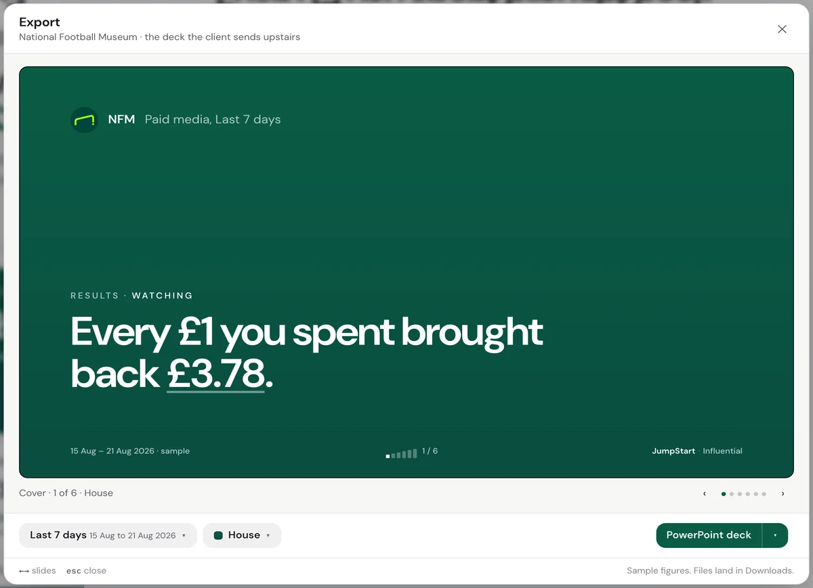
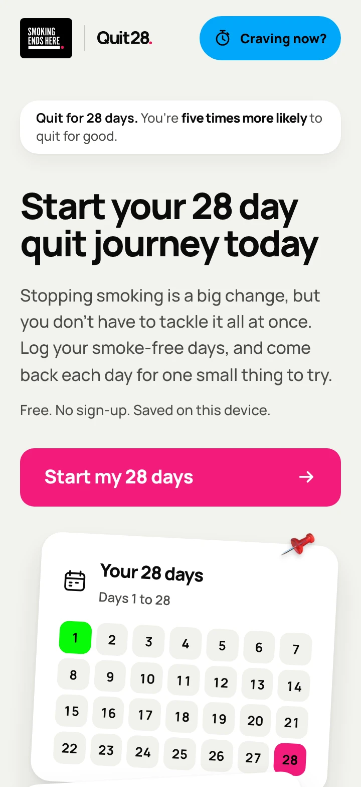

Agency reporting productIn pilot
JumpStart
Paid media reporting that explains itself. Clients get a plain-English read of what changed, why it matters and what happens next.



A 28-day quit plan that runs in the browser. Pick a first day, log each smoke-free day, and open one small tip or tool a day.
On a phone, where most people use it.
1
The welcome shows the whole product: the 28-day calendar, day 1’s tip and three steps. One button starts it.

2
One tap logs a smoke-free day. The button turns green, a tick draws in and a chime plays. Every save gets the same small moment.

3
Each day opens one tip or tool. Day 7 asks for one thing you’re proud of.

4
“Craving now?” sits in the header on every screen. It opens a three-minute timer with a breathing circle and a soft sound.

19 to 26 October
Quit28 counts what people do, not who they are. Every figure is an anonymous count per phone or browser, not per person. A logged day is someone’s own word, so none of this measures a quit.
Most people who pressed Start went on to save a date, 40 of 55. The big drop is earlier: two in three people who saw the welcome never pressed Start. That’s the next thing to work on.
Next project
Paid media reporting that explains itself. Clients get a plain-English read of what changed, why it matters and what happens next.
